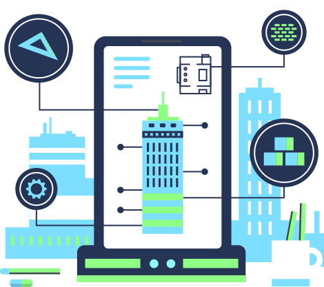

Infrastructure maintenance & safety.
AI-driven image analysis to improve maintenance, safety compliance, and infrastructure insight.

Our approach
Smarter infrastructure.
Maintaining Africa's vital infrastructure networks — from construction sites and electricity lines to transportation routes and waterways — is crucial for sustainable development. Traditional inspection methods can be time-consuming, labor-intensive, and prone to error. We work on AI-driven image analysis to help infrastructure management teams optimize maintenance, ensure safety compliance, and gain insight into infrastructure usage.
- Real-time image detection and analysisAn AI-powered system for real-time image analysis at infrastructure sites, including construction zones, electricity lines, and water networks.
- Proactive maintenanceAutomatic detection of potential issues such as cracks in bridges, damaged power lines, or water leaks, enabling early intervention and preventing costly repairs.
- Automated PPE detection for complianceAI models analyze images or video footage from construction sites to identify workers who are not wearing proper personal protective equipment, triggering alerts so supervisors can address safety concerns immediately.
Explore more